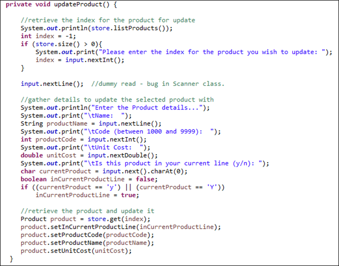
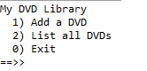

Objectives
In this lab, you will implement CRUD into ShopV3.0. You will also apply your CRUD knowledge to another domain i.e. start to build a DVD library.
Developing Shop V3.0
In this practical, you will create a new project called ShopV3.0 in Eclipse and refactor the code so that CRUD is fully implemented for the Product class. This will be the menu you will finally end up with:

Starting ShopV3.0
Create a new project called ShopV3.0.
Copy the following classes into the project (these are ShopV2.0 classes):
If you are not familiar with the code in these classes, take time now to review it.
Updating the ShopV2.0 Menu for ShopV3.0
- The menu for ShopV2.0 is:
- Make the following changes in ShopV3.0, MenuController class:
- Also change the switch statement in ShopV3.0, MenuController to reflect these changes:
Writing the updateProduct() method, attempt No.1
- Add this method into ShopV3.0, MenuController class:

- Test the new code. In particular, call the update option when there are no products in the ArrayList. What happens?
Writing the updateProduct() method, attempt No.2
- Refactor your updateProduct() method to this:
Test the new code. In particular:
- Does it work now when there are no product?
- call the update option when there are products in the ArrayList, but enter an invalid index. What happens?
Writing the updateProduct() method, attempt No.3
- Refactor your updateProduct() method to this:
Test the new code. In particular:
- Does it work now when there are no product?
- Does it work now when there are products in the ArrayList and we enter an invalid index?
Run the project (as a Java Application).
Test options 1 and 2 to ensure you can add and list products.
Test options 3 and 4; they will do nothing and we will add this code in the subsequent steps.
DRYing out Shop V3.0, first pass!
Continue working with ShopV3.0 in Eclipse. We will now focus on the Don't Repeat Yourself principle and refactor our code so that it is cleaner.
Some Repeated Code
- Did you notice, when writing the updateProduct() method that you re-used a lot of code that was already written in addProduct()?

Writing a new helper method
Write a new private, helper method and move this repeated code into it.
Your method should look like this and should return a Product object containing all the details the user typed in:
Calling the new helper method
- Refactor your updateProduct() and addProduct() methods to use the new helper method.
- Already, your MenuController class is looking much neater and easier to read!
Test the changes
- Test the add and update options to ensure that they still work as expected.
Menu Item 4: Deleting a product
- In the Driver class, make the following changes to implement case 4 (deleting a product):
Run the project (as a Java Application).
Add a product using option 1.
Test option 4 and try to delete the product you just added.
Did it work?
Now try to delete a product that doesn't exist e.g. enter an index of 6.
What happened? Did your program crash?
Menu Item 4: Adding error checking
- In the Driver class, make the following changes to implement error checking:
Run the project (as a Java Application).
Test these three scenarios:
No products exist...try deleting a product. The message "No products" should be displayed.
Create two products...try deleting a product at index 6. A message similar to "There is no product for this index number" should be displayed.
With the two products created...try deleting a product at index 1. The product is deleted.
DRYing out Shop V3.0, second pass!
We will continue with the DRY principle in ShopV3.0 in Eclipse.
Some More Repeated Code
- Did you notice that we had similar code in two places that listed the products and then asked the user to enter an index number?
Writing another new helper method
Write a new private, helper method and move this repeated code into it.
Your method should look like this and should return an int representing the index the user selected. Note that a -1 is returned if there are no items in the ArrayList:
Calling the new helper method
- Refactor your switch statement and your updateProduct() method to use the new helper method.
- The more refactoring you do, the more the MenuController class looks neater and easier to read!
Test the changes
- Test the remove and update options.
- The remove works as expected, but did you notice, when the ArrayList was empty, that the update (incorrectly) output that an invalid index of -1 was entered?
- To fix this, follow these instructions:
- Test the remove and update options again; hopefully this time, all should work as expected.
DRYing out Shop V3.0, third pass!
We will continue with the DRY principle in ShopV3.0 in Eclipse.
Yet More Repeated Code
- Did you notice that we had similar code in a few places (in more than one class too) to determine if an inputted index was valid?
Writing a new method in Store
- Write a new public method in the Store class and make the following changes in Store:
Calling the new method from MenuController
- Refactor your updateProduct() method to use the new Store method:
- Refactor your getIndex() method to use the new Store method:
Test the changes
- Test the changes you made to ensure that they still work as expected.
Menu Driven DVD Specification (Phase 1)
Over the next few weeks, we will develop a menu-driven DVDLibrary app (CRUD).
When developing this application, always consider the DRY principle and try to anticipate future changes that may come downstream e.g. you know you are building a CRUD based console driven app, so use your knowledge from the Shop app here.
Here, you will work on Phase 1 of this application; it presents the user with a simple menu for adding and listing DVD titles.
Create a new project in Eclipse called DVDLibraryV1.0.
DVD class
Within the current project, create a new class called DVD. In this class
Add an instance field, called title, that will store the title of the DVD.
Add a constructor that takes in the title as a parameter and updates the instance field, title (no validation).
Add an accessor and a mutator for the title field.
Add a toString method that formats the object state to a user-friendly string.
Library class
Within the current project, create a new class called Library. In this class:
Add an instance field called dvds that can hold an ArrayList of DVDs.
Add a constructor that instantiates the above ArrayList.
Add a method add() that accpets a DVD object as a parameter. This method should add the passed DVD object to the dvds ArrayList.
Add a method listDVDs() that returns a String comprising the index number and the title of each DVD in the dvds ArrayList. If there are no dvds in the ArrayList, the String "No DVDs" should be returned.
Driver class
Within the current project, create a new class called Driver. In this class:
Add an instance field called library that is of type Library.
Add a constructor that instantiates the above library field.
Create a Scanner object that can be used by all methods in the class.
Add a private method called addDVD() that has a void return type. This method is responsible for asking the user to enter a title for the DVD and adding it to the DVD array list.
Add a private method mainMenu() that has an int return type. This method should display the name of the menu and the menu options (see Figure 1). This method should read the menu option that the user entered and return it.

Add a private method run() that has a void return type. This method is responsible for processing the menu option the user entered and also repeatedly displaying the menu to the user.
Then write a main method that will create an instance of itself (i.e. the Driver class) and call the run method over this instance (see the code below).
public static void main (String[] args)
{
Driver app = new Driver();
app.run();
}Run and Test
Run the project (as a Java Application).
Test adding a DVD and listing them. Try listing the DVDs when no DVDs have been entered.
JavaDoc
- Javadoc your solution
Menu Driven DVD Specification (Phase 2)
Remember, when developing this application, always consider the DRY principle and try to anticipate future changes that may come downstream e.g. you know you are building a CRUD based console driven app, so use your knowledge from the Shop app here.
Create a new project in Eclipse, called DVDLibraryV2.0.
Copy the src java code from DVDLibraryV1.0 into it.
You will now extend the code to allow the user to update and delete DVDs (note that the solution to DVD version 1 is in the solutions tab, should you need it).
Update a DVD
In your driver class:
add a third option to the menu: 3) Update a DVD.
in the switch statement, add a call to the updateDVD() method.
create an updateDVD() method that has no return type. This method should:
if DVDs exist in the ArrayList, list the DVDs and ask the user which one they would like to edit.
if the user types in a valid index, ask the user to enter a new title for the DVD.
retrieve the DVD at the specified index and update the title using the title mutator.
In your Library class, add an accessor for the dvs ArrayList:
public ArrayList<DVD> getDVDs()
{
return dvds;
}Run your code and test this code for the following three scenarios:
No DVDs exist...try updating a DVD. The message "No DVDs" should be displayed.
Create two DVDs...try updating a DVD at index 6. A message similar to "There is no DVD for this index number" should be displayed.
With the two DVDs created...try updating a DVD at index 1. The DVD should be updated.
Delete a DVD
In your driver class:
add a fourth option to the menu: 4) Delete a DVD.
in the switch statement, add a call to the deleteDVD() method.
create an deleteDVD() method that has no return type. This method should:
if DVDs exist in the ArrayList, list the DVDs and ask the user which one they would like to delete.
if the user types in a valid index, delete the DVD at that index.
Run your code and test this code for the following three scenarios:
No DVDs exist...try deleting a DVD. The message "No DVDs" should be displayed.
Create two DVDs...try deleting a DVD at index 6. A message similar to "There is no DVD for this index number" should be displayed.
With the two DVDs created...try deleting a DVD at index 1. The DVD should be updated.
JavaDoc
- Javadoc your solution